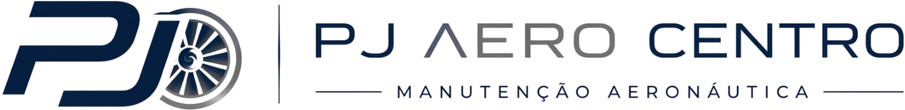

50 horas
R$ 5.000,00
Inspeção periódica de rotina: motor, filtros, lubrificação, comandos, sistema de aplicação e verificação geral de segurança de voo.
É a inspeção que mantém a aeronave voando dentro da safra.

Oficina própria em Cerejeiras–RO, dedicada à aviação agrícola, com rastreabilidade digital de cada serviço executado na sua aeronave.
A oficina que nasceu do problema que todo operador conhece.
A PJ Aero Centro é a oficina de manutenção aeronáutica instalada em Cerejeiras–RO para atender a aviação agrícola da região. Nasceu de uma necessidade que todo operador conhece: aeronave parada esperando vaga em oficina longe, em plena janela de aplicação, custa mais do que qualquer manutenção.
Trabalhamos com estrutura própria, equipe fixa e um sistema de ordem de serviço digital que registra cada etapa do trabalho — com foto, assinatura do mecânico que executou e do profissional que conferiu.
Aeronaves agrícolas de asa fixa — Air Tractor, Ipanema, Sertanejo e similares — com atendimento às inspeções periódicas, revisões de célula, motor e hélice, cumprimento de boletins de serviço e diretrizes de aeronavegabilidade.
A PJ Aero Centro encontra-se em processo de certificação como Organização de Manutenção junto à ANAC, com documentação protocolada e aguardando parecer final.
Apresentamos esta proposta desde já porque entendemos que o planejamento de manutenção de uma frota se faz com antecedência. A execução dos serviços aqui propostos se inicia com a emissão do certificado, e manteremos a Fazenda Independência informada de cada etapa até a homologação.
O ano inteiro planejado — e não uma sequência de emergências.
Inspeção periódica de rotina: motor, filtros, lubrificação, comandos, sistema de aplicação e verificação geral de segurança de voo.
É a inspeção que mantém a aeronave voando dentro da safra.
Inspeção ampliada de célula, motor e hélice, com abertura de painéis, verificação estrutural e de sistemas, e cumprimento de boletins aplicáveis.
Inspeção periódica com itens adicionais de célula e motor previstos no programa do fabricante.
Inspeção de maior profundidade, incluindo itens estruturais, trem de pouso, comandos e ensaios do motor.
Inclui teste de compressão diferencial dos cilindros, com registro comparado às inspeções anteriores.
Inspeção e organização documental para renovação do CVA: conferência de cumprimento de DA e boletins, mapa de componentes e histórico de manutenção da aeronave.
Valores referentes à mão de obra. Peças, componentes e materiais aeronáuticos são orçados à parte e aprovados pelo cliente antes da aplicação.
Toda oficina entrega a aeronave. Poucas entregam o histórico dela.
Trabalhamos com um sistema próprio de ordem de serviço em que o proprietário acompanha o trabalho em tempo real, por um link no celular — sem precisar ligar perguntando como está.
O material poderá ser fornecido pelo cliente ou cobrado à parte, caso sejam utilizados materiais da PJ Aero Centro — graxas, óleos, desengraxantes, desengripantes, AV-GAS, etanol, abraçadeiras, roldanas, rolamentos, cabos, entre outros. Todo material utilizado é aeronáutico e possui formulário equivalente (FORM), anexado à documentação do Mapa de Componentes da Aeronave.
Jateamento de areia em peças, soldas de estrutura e trabalhos de torno são cobrados à parte, conforme necessidade verificada após o início da revisão, com orçamento complementar específico. O polimento total da aeronave é negociado separadamente.
Proposta válida por 60 dias. Os valores de mão de obra aqui apresentados ficam garantidos para as inspeções realizadas nos 12 meses seguintes à contratação. A execução tem início com a emissão do certificado de Organização de Manutenção.